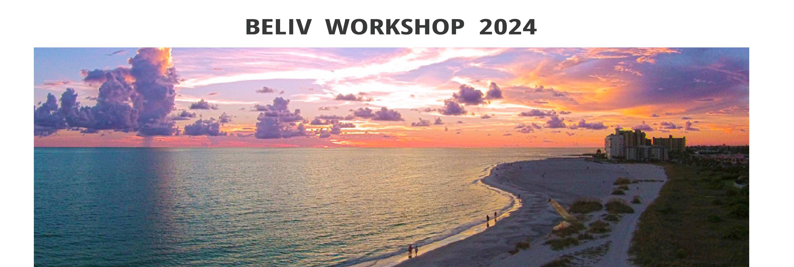

BELIV 2024 Papers
Session 1: Welcome, Keynote and Q&A, and Paper Talks
(8:30 - 9:45
EST)
8:30 - 8:40: Welcome Opening
8:40 - 9:25: Keynote
Dr. Simone Stumpf — How to Empower Stakeholders to Assess AI systems
Dr. Simone Stumpf — How to Empower Stakeholders to Assess AI systems
Assessing AI to make sure it is ethical and responsible has, until now, been left solely in the hands of AI experts. There is no agreement of what counts as ‘good enough’ to be acceptable to stakeholders, including ones who ultimately use the AI or are affected by its outputs. PHAWM, one of three RAI UK-funded keystone projects, is driving change in AI testing and evaluation through the novel concept of participatory AI auditing, where a diverse set of stakeholders without a technical background in AI, such as domain experts, regulators, decision subjects and end-users, are empowered to undertake audits of predictive and generative AI, either individually or collectively. This talk will describe the landscape of AI assessment, particularly from a stakeholder perspective. [More Info]
9:25 - 9:35 Paper —
Proposing the use of an “Advocatus Diaboli”
as a pragmatic approach to improve
transparency in
qualitative data analysis and reporting
Judith Friedl-Knirsch
Judith Friedl-Knirsch
9:35 - 9:45: Paper — Visualising
Lived Experience: Learning
from a Master Narrative
Framing
Mai Elshehaly, Mirela Reljan-Delaney, Jason Dykes, Aidan Slingsby, Jo Wood, Sam Spiegel
Mai Elshehaly, Mirela Reljan-Delaney, Jason Dykes, Aidan Slingsby, Jo Wood, Sam Spiegel
BREAK 9:45 - 10:15
Session 2: Experiments and Evaluations (Paper Presentations) + Break-out Session (10:15 - 11:30 EST)
10:15 - 10:20: Session Intro
10:20 - 10:30: Paper — Exploring
Subjective Notions of Explainability through Counterfactual Visualization
of Sentiment
Analysis
Anamaria Crisan, Nathan Butters, Zoe
Anamaria Crisan, Nathan Butters, Zoe
10:30 - 10:40: Paper — Old Wine
in a
New Bottle? Analysis of Visual Lineups with Signal Detection
Theory
Sheng Long, Matthew Kay
Sheng Long, Matthew Kay
10:40 - 10:50: Paper — Tasks and
Telephones: Threats to Experimental Validity due to Misunderstandings of Visualisation
Tasks and Strategies
Abhraneel Sarma, Sheng Long, Michael Correll, Matthew Kay
Abhraneel Sarma, Sheng Long, Michael Correll, Matthew Kay
10:50 - 11:00: Paper — "Normalized
Stress" is Not Normalized: How to Interpret Stress Correctly
Kiran Smelser, Jacob Miller, Stephen Kobourov
Kiran Smelser, Jacob Miller, Stephen Kobourov
11:00 - 11:30 Breakout Session #1
BREAK 12:00-1:30
Session 3: Theory and Practice (Paper Presentations) (1:30 - 2:45 EST)
1:30 - 1:35: Session Intro
1:35 - 1:45: Paper — The Role of
Metacognition in Understanding Deceptive Bar Charts
Antonia Schlieder, Jan Rummel, Peter Albers, Filip Sadlo
Antonia Schlieder, Jan Rummel, Peter Albers, Filip Sadlo
1:45 - 1:55: Paper — The
Visualization JUDGE: Can Multimodal Foundation Models Guide Visualization Design Through
Visual Perception?
Matthew Berger, Shusen Liu
Matthew Berger, Shusen Liu
1:55 - 2:05: Paper —
Design-Specific Transforms In Visualization
Eugene Wu, Remco Chang
Eugene Wu, Remco Chang
2:05 - 2:15: Paper —
Complexity as Design Material
Florian Windhager, Alfie Abdul-Rahman, Mark-Jan Bludau, Nicole Hengesbach, Houda Lamqaddam, Isabel Meirelles, Bettina Speckmann, Michael Correll
Florian Windhager, Alfie Abdul-Rahman, Mark-Jan Bludau, Nicole Hengesbach, Houda Lamqaddam, Isabel Meirelles, Bettina Speckmann, Michael Correll
2:15 - 2:25: Paper —
Visualization Artifacts are Boundary Objects
Jasmine Tan Otto, Scott Davidoff
Jasmine Tan Otto, Scott Davidoff
2:25 - 2:35: Paper —
Merits and Limits of Preregistration for Visualization Research
Lonni Besançon, Brian Nosek, Tamarinde Haven, Miriah Meyer, Cody Dunne, Mohammad Ghoniem
Lonni Besançon, Brian Nosek, Tamarinde Haven, Miriah Meyer, Cody Dunne, Mohammad Ghoniem
2:35 - 2:45: Paper —
The State of Reproducibility Stamps for Visualization Research Papers
Tobias Isenberg
Tobias Isenberg
BREAK 2:45 - 3:15pm
Session 4: Reflections and Research Directions (Paper Presentations) + Break-out Session (3:15 - 4:30pm EST)
3:15 - 3:20: Session Intro
3:20 - 3:30: Paper —
Testing the Test: Observations When Assessing Visualization Literacy of Domain
Experts
Seyda Öney, Moataz Abdelaal, Kuno Kurzhals, Paul Betz, Cordula Kropp, Daniel Weiskopf
Seyda Öney, Moataz Abdelaal, Kuno Kurzhals, Paul Betz, Cordula Kropp, Daniel Weiskopf
3:30 - 3:40: Paper —
We Don't Know How to Assess LLM Contributions in VIS/HCI
Anamaria Crisan
Anamaria Crisan
3:40 - 3:50: Paper —
Bridging Quantitative and Qualitative Methods for Visualization Research: A Data/Semantics Perspective
in the Light of Advanced AI
Daniel Weiskopf
Daniel Weiskopf
3:50 - 4:00: Paper —
Striking the Right Balance: Systematic Assessment of Evaluation Method Distribution Across
Contribution Types
Feng Lin, Arran Zeyu Wang, Md Dilshadur Rahman, Danielle Albers Szafir, Ghulam Jilani Quadri
Feng Lin, Arran Zeyu Wang, Md Dilshadur Rahman, Danielle Albers Szafir, Ghulam Jilani Quadri
4:00 - 4:25 Breakout Session #2
4:25 - 4:30 Closing
In conjunction with

In conjunction with